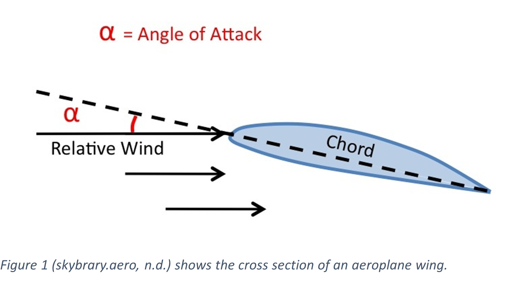
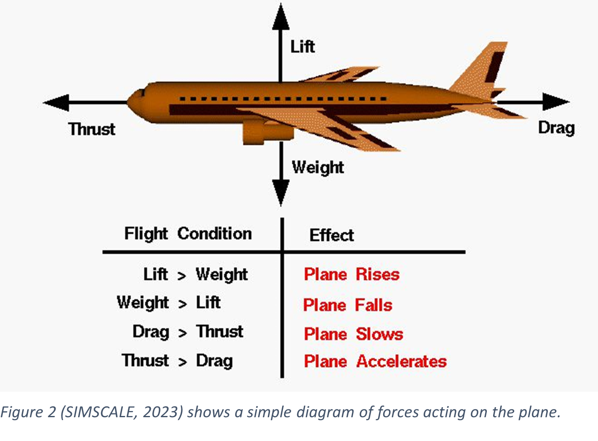

Angle of attack (AOA) is a critical component that affects lift, drag, and the overall performance of the aircraft in flight dynamics. This
essay explains the importance of angle of attack (AOA) in aviation, including how it contributes to lift production, the dangers of stalling
because of excessive AOA, and the techniques used in aircraft design to control AOA, like the use of flaps and slats. Planes try to minimize
fuel consumption and their impact on the environment by maximizing efficiency during takeoff, landing, and cruising by adjusting their angle
of attack (AOA). This conversation emphasizes how vitally important AOA management is to improved flight capability and sustainability in
contemporary aviation.
Introduction
An increase in angle of attack of a planes’ wings results in an increase in both lift and induced drag (skybrary.aero, n.d.). If the angle of
attack is too steep, the airflow across the upper surface of the aerofoil gets disconnected. This results in the airflow around the wing not
being laminar (Al Bowers, 2011) resulting in a loss of lift, also known as stalling. The angle at which relative wind strikes an aerofoil is
known as the angle of attack. The relative velocity between the aeroplane and the atmosphere is represented by the angle created by the
aerofoil's chord and the relative wind direction (skybrary.aero, n.d.). By finding ways to maximise the angle of attack, we can reduce the
time taken for take-off and landing which would reduce the fuel consumption as a huge amount of fuel is needed for that part of the journey.
Why do planes need an angle of attack (AOA)?
Over time, the design of planes’ wings have changed to increase lift and reduce the amount of thrust needed for flight. This is done by making
the air on top of the wing move faster than the bottom (SIMSCALE, 2023). This is why the wings’ top surface is curved and the bottom is flat.
Having a greater velocity of air on the top than the bottom creates a low pressure zone on top of the wing and a greater pressure on the bottom
(The National Aeronautics and Space Administration, 2017). In order to create and even greater angle the wing itself is tilted which allows for
the plane to have maximum upthrust whilst burning a minute amount of fuel.
Effects of angle of attack on flight
The angle of attack of an aerofoil can be visualized by looking at the aerofoil’s cross section and the direction of oncoming wind during flight.

A plane's angle of attack has several implications. While increasing the angle of attack results in increased lift, it also makes aeroplanes more
susceptible to stalling. Lift creation is primarily a result of the difference in air pressure above and below the wings of an aircraft. As air flows
over the wing's curved upper surface (with a higher camber) and the flatter lower surface, it encounters different distances to travel in the same
amount of time (Bernoulli's principle). This variation in distance leads to a difference in airspeed: the air on top travels faster than the air
beneath the wing. Stalls occur when an aeroplane fails to generate adequate lift due to a critical angle of attack (when the angle of attack is
greater than the maximum angle of attack). Air will flow easily over the plane's wings, and if there is insufficient lift, i.e. the weight due to
gravity is greater than the lift, the plane will fall from the sky.

From figure two we can assume the same forces also affect the aerofoil (similar to figure 1) if we link this to the theory of flight which states:
Four physical forces must be carefully balanced in order for heavier-than-air flight to be possible: lift, drag, weight and thrust.
(MIT Department of Aeronautics and Astronautics, 1997). We can momentarily alter the wing's shape and angle of attack by using flaps and slacks.
Flaps and slats are aerodynamic devices built into aircraft wings that serve to change and control the angle of attack (AOA) during various phases
of flight. These tools are essential for improving aerodynamic performance because they provide more lift, better control, and fuel efficiency. The
chord line shifts as the flaps descend and the trailing edge moves. This results in an increase in the wing's size and angle of attack.
(MIT Department of Aeronautics and Astronautics, 1997). This allows planes to be more fuel efficient thus being more economical for the airlines as
well as more environmentally friendly.
Conclusion
The angle of attack (AOA) serves as a critical determinant in aviation, governing the balance between lift and drag crucial for flight. While
increasing AOA enhances lift, it simultaneously heightens the risk of stalling when surpassing a critical threshold. Understanding the intricate
relationship between AOA, airflow, and wing design allows for innovations in aviation technology, such as adjustable flaps and slats, enabling planes
to optimize AOA for improved fuel efficiency and environmental impact. Effectively managing AOA remains pivotal in advancing aircraft design, enhancing
flight performance, and reducing operational costs.
References
Al Bowers, A. (2011). Laminar Flow and the Holy Grail – Armstrong Flight Research Center. [online] blogs.nasa.gov.
Available at: https://blogs.nasa.gov/
[Accessed 10 Oct. 2023].
Anderson, J. (2017). WINGS: From the Wright Brothers to the Present. [online] National Air and Space Museum.
Available at: https://airandspace.si.edu/
[Accessed 16 Nov. 2023].
Benson, T. (n.d.). Flaps and Slats. [online] www.grc.nasa.gov.
Available at: https://www.grc.nasa.gov/
[Accessed 5 Dec. 2023].
Cadence CFD (n.d.). How an Airfoil’s Angle of Attack Creates Lift and Drag. [online] resources.system-analysis.cadence.com.
Available at: https://resources.system-analysis.cadence.com/
[Accessed 30 Oct. 2023].
Cleared for Takeoff. (2022). Angle of Attack Awareness. [online]
Available at: https://medium.com/
[Accessed 30 Oct. 2023].
Euronews (2021). Under the bonnet: How have planes changed over time? [online] Euronews.
Available at: https://www.euronews.com/
[Accessed 27 Oct. 2023].
howthingsfly.si.edu. (2014). | How Things Fly. [online]
Available at: https://howthingsfly.si.edu/
[Accessed 30 Oct. 2023].
MIT Department of Aeronautics and Astronautics (1997). Theory of Flight. [online] Mit.edu.
Available at: https://web.mit.edu/
[Accessed 25 Oct. 2023].
National Air and Space Museum. (n.d.). 1903 Wright Flyer. [online]
Available at: https://airandspace.si.edu/
[Accessed 24 Oct. 2023].
resources.system-analysis.cadence.com. (n.d.). Airfoil Streamlines and Airflow Patterns.
[online] Available at: https://resources.system-analysis.cadence.com/
[Accessed 24 Oct. 2023].
SIMSCALE (2023). What is Lift, Drag and Pitch? | SimWiki. [online] SimScale.
Available at: https://www.simscale.com/
[Accessed 15 Oct. 2023].
SKYbrary (2021). Aerofoil. [online] SKYbrary Aviation Safety.
Available at: https://skybrary.aero/
[Accessed 9 Oct. 2023].
skybrary.aero. (n.d.). Angle of Attack (AOA) | SKYbrary Aviation Safety. [online]
Available at: https://skybrary.aero/
[Accessed 9 Oct. 2023].
The National Aeronautics and Space Administration (2017). What Is Aerodynamics? (Grades 5-8) - NASA. [online] What Is Aerodynamics? (Grades 5-8).
Available at: https://www.nasa.gov/
[Accessed 9 Oct. 2023].
Presentation: Why do planes have a maximum angle of attack, and what are its limitations?